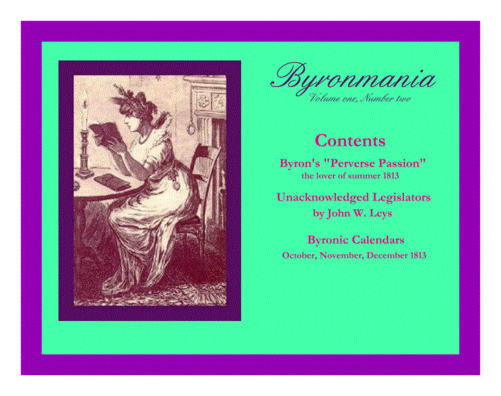
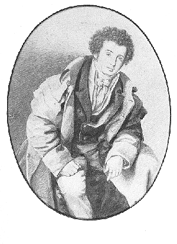

Back to: BYRONMANIA
E-JOURNAL
Back to: BYRONMANIA.COM

WELCOME TO
Volume one number two
continuing
the exploration of
The crisis of the heart in 1813 and 1814
as expressed in the letters, journals and poetry
of

The
Right Honourable
George Gordon Lord Byron
the real,
original,
Regency Romantic hero
in boots, pantaloons and many caped coat,
revolutionary,
philosopher,
athlete,
poet
born deformed,
victim of child abuse,
advocate of paederasty,
source of the Vampyre,
Old English Baron
rake,
debtor,
hounded by the press,
ostracised because of rumours of
sexual deviations and
irreligion,
abandoned by his wife,
legendary bi-sexual lover
and freedom fighter
.
Welcome to Byronmania’s first guest contributor, John W. Leys, author of the article
“Unacknowledged Legislators”.
John is the
leader of the Byron-maniacs who prowl the web, author of the series of sites
dedicated to the Romantic poets and friends; the Percy Bysshe Shelley Web Page,
the Lord Byron Web Page, the Unacknowledged Legislators Poetry Web Board the
Unacknowledged Legislators Chat Page and the Lord Byron Web Ring.
The Lord Byron
Web Ring can be found at: http://www.geocities.com/Athens/Acropolis/8916/webring.html
Welcome, also, to
all Byron-maniacs.
Please submit
articles on your personal obsessions, puzzles, speculations and discoveries
about the “adorable Lord Byron” (as he was addressed by the famous courtesan
Harriette Wilson) by e-mail to byronmania [at] shaw [dot] ca
And please feel
free to link this site if you are interested.
“ That
Perverse Passion”
In the late
summer of 1813, Lord Byron had fallen into some kind of awkward and unwelcome
love. He referred to it as “that
perverse passion” in a letter to Lady Melbourne on November 24th
1813.
He was trying to
extricate himself from this affair by the dubious technique of falling in love
with someone else.
He had almost
managed to do this at a country house party in early October. The lady of the house, Frances Webster, had
tried her best to seduce him.
A few weeks
later, the moment of truth arrived.
They were alone together at two in the morning, in his home, she lost
her nerve, dissolved in tears called on God and he “spared” her.
He was,
therefore, in the awkward position of being in an embarrassing but
unconsummated involvement with the wife of his good friend, Wedderburn Webster.
He believed he
would probably have to fight a duel with him, but he contemplated it with
resignation. He intended to hold his
fire and realized he might be killed.
He was also considering having to elope with Frances, a woman that he
described as being “measured for a new Bible once a quarter” – not exactly his
type.
This situation
was considered to be an improvement over the “scrape” of the summer which must
have been truly “perverse”.
Byron’s poems
“The Giaour” “The Bride of Abydos” and
“The Corsair” (his most popular and successful works at the time) were
all written under the influence of this emotional stress, which makes it of
literary as well as of biographical interest.
Most scholars
accept that this inappropriate
relationship was with his half-sister, Augusta Byron Leigh. She was married to their cousin, George
Leigh, whose mother, Frances Byron Leigh, had been the sister of their father
“Mad Jack” Byron. Byron and Augusta had
not been close as children, having been raised in different parts of the
country. Even though Byron was a Lord
he was not as socially prominent as his sister, because her mother had been a
countess and she had been raised by her grandmother, Lady Holderness. She was close to the Royal family, which
Byron and all other fashionably republican young men detested as “tyrants”.
There are,
however, other possible candidates for the identity of Byron’s perverse passion
of the summer of 1813.
This edition of Byronmania
will present other
women, inappropriate in various ways and possible “perverse” as passions, who
were in Byron’s life in the late summer of 1813.
They were all named ‘Charlotte’.
Byron by Sanders about 1813
“ Byron’s Charlottes”
Augusta Leigh
attempted, in the
summer of 1814, to arrange her brother’s marriage to her friend, Lady Charlotte
Leveson Gower. [i]
In a letter to
Augusta written on June 18, describing having finally met her, Byron refers to Rogers introducing him to Lady
Charlotte “up comes Rogers with your Ch.e[Charlotte]”
Your Charlotte? Who was Byron’s Charlotte?
In her notes
explaining why she left him in 1816, Byron’s wife Annabella recorded that Byron
had told her that one day his former
mistress, Lady Oxford, had surprised him making love with her daughter, Charlotte Harley.[ii]
Byron had been
living as a guest of the family at their country estate at Eywood. His three months there, making love,
reading, discussing politics and playing with the children were among the
happiest in his life. Charlotte was very pretty and engaging — and eleven years old.
Byron mentions
her in his letters to Lady Melbourne
from Eywood, on April 5, 1813, “ Charlotte
Harley... I shall probably marry when she is old enough and bad enough to be
made into a modern wife” and
two weeks later, “I am very busy
educating my future wife”[iii]
If Byron had been “educating” her in the ways of
love, he would certainly have
not been welcome on the family trip to
Sicily in June. This might have been
the impetus for the
family’s removal from England without him.
A bitter jealousy it would have been for Lady Oxford, at the age of forty to share her lover with
her child.
To Annabella
Byron’s satisfaction and justification, this added pedophilia to the list of
Byron’s deviations, enhancing his reputation as a monster and providing more
evidence to reinforce her carefully crafted image as a saint delivered from
corruption.
But, in 1813,
there was probably another Charlotte in Byron’s life, a very mysterious relationship, and inappropriate in its’ own
way.
In a letter to
her confidante and only intimate
friend, Margaret Mercer Elphinstone, on October 28, 1812, Princess Charlotte, Heiress Presumptive, daughter of the Prince Regent,
had remarked, “ I have seen a great deal of Lord Byron lately”. [iv]
Even though Margaret Mercer Elphinstone was
one of his friends, in the voluminous
collection of writings by and
about Byron there is
never any mention of his having met Princess Charlotte. Now, how could this be?
Princess
Charlotte is the forgotten princess of British history. Her grandfather, George III, was insane. Her father George, the Prince Regent, who ruled in his father’s name, was not much more mentally stable. He had married, in 1785, an eminently respectable Catholic widow, Mrs. Fitzherbert, in a
religious ceremony, as she had refused to become his mistress, and because he loved her to
distraction. This was not considered a
legal marriage, however, and ten years later, he was formally married to Princess Caroline
of Brunswick. They detested each other.
After the birth
of their daughter, Charlotte, in January 1796, they separated and the Prince
went back to his morganatic wife. There
were no more legitimate children.
Charlotte, like
most children of broken homes, was torn in her loyalties. Her mother was liberal and supported Whig
policies. Like all young and fashionable people, so did Charlotte. The Whigs,
the opposition in parliament, returned the favour and supported the Princesses
in their struggles with the rest of the Royal
family.
The Prince of
Wales had, himself, been a Whig,
but, in February, 1812, he repudiated the party in order to get Tory government
support for his becoming
Regent with Unrestricted Powers.
At a party on
February 13th, 1812, the Princess
Charlotte had burst into tears at hearing about her father’s change of
politics. On Saturday March 7, an anonymous and scandalous poem
about it appeared in the Morning Chronicle newspaper entitled “Sympathetic Address to a Young
Lady”. [v]
In the autumn of
1812, Byron was living at Cheltenham, taking
the waters and recovering from ‘a smart attack of the stone’ in the
kidney. In the second week of October, Byron spent time at Middleton, the
country home of Lady Jersey, a close friend of his and of Princess Charlotte. This week was
frequently referred to later, in a joking
way, by Byron in his letters to Lady Melbourne, as she had been there also, as
a very “proper” time.
the
week of immaculate memory last autumn at Middleton ... (where the beauties
certainly did not belong to the landscape ) …[vi]
although the recollection of my visit there
will always retain it’s “proper” preeminence nor can I possibly pronounce where
all was “proper” who was the “properest” but I am sure no one can regret the
general propriety half so much as I do[vii]
This semms to
indicate that there was someone at Middleton in October 1812, that Byron was
attracted to, but with whom he had to behave in a “proper” manner. This “proper” and “immaculate” behaviour was
evidently sufficiently frustrating that it became a private joke with Lady
Melbourne. On November 6th
1812, Byron wrote a parenthesis in a letter to Lady Melbourne
At
M[iddleton]- & before - my memory really fails me - I never laughed at P -
(by the bye this is an initial which might puzzle posterity when our
correspondence bursts forth in the 20th century) [viii]
Well, it
certainly puzzles me!
It was a common practice to use initials in correspondence to
obscure the identity of people being discussed because letters were frequently
opened and read by servants, and Byron and Lady Melbourne knew that Caroline
Lamb had paid servants to spy on Byron and open his letters. Why would a “P” puzzle posterity unless it
had some historical meaning? This quote
also makes it clear that Byron expected his correspondence to be read in the 20th
century and, as he wrote, was editing it with that in mind.
On December 27th,
1812, Byron wrote to Lady Melbourne
I know
very little of the P’s party and less of her publication (if it be hers) &
am not at all in ye. secret, but I am
aware that the advice given her by the most judicious of her “ little Senate”
has been to remain quiet & leave all to the P[rincessl C[harlotte] - I have
heard nothing of the thing you mention except in ye papers… I by no means
consider myself as attached to her or any party, though I certainly should
support her interest... [ix]
It would seem
from the context here that “P” is the Princess of Wales. The “publication” referred to was a release
to the press of the Princesses’s side of the family squabbles, several of which appeared during these
years. This is unusual, as the accepted
abbreviation for “Princess” was “Pss”.
Charlotte was
allowed to visit her mother at Montague House, Blackheath, once every two weeks on weekends, and socialize
with her friends at dinners and soirees.
When Byron was in his relationship
with Lady Oxford, as she was a close friend of the Princess of Wales, he would have been there. The Princess of Wales, of enthusiastic sexuality herself,
encouraged her daughter in romantic escapades. She had shut her up in a bedroom with a Lieutenant
of dragoons when she was sixteen, telling
the young people to enjoy themselves.
Not surprisingly, the little Princess was not trusted by her father. She was watched by spying
Ladies in Waiting and her letters were opened.
On December 8th, 1812, from her “prison” at
Windsor, Princess Charlotte asked Margaret Mercer Elphinstone to put ‘a
little cross in the corner
‘ of the wrapper of her letters as a secret sign to help her recognize
which letters were from her. [x]
Crosses seem to have been very popular
secret signs, as Byron began to use them extensively in his correspondence in
1813 and 1814.
Princess
Charlotte did something in the summer of 1813 that enraged her father. He removed her from London, refused to allow
her to see Margaret Mercer and more or less imprisoned her at Windsor
Castle. In a letter to Margaret, Charlotte
refers to the fact that part of her father’s anger was caused by her too frequent visits to the portraitist,
Sanders, and the presence of Lady Jersey in his studio.
There are at least two portraits of Byron by
Sanders. One is the full size one owned
by the Queen, of Byron and his servant Robert Rushton landing from a boat,
painted in 1810, before he went to Greece, and the other is a beautiful
miniature painted in 1812 or 1813.
In this
miniature, Byron is wearing a heavy fur trimmed overcoat called a “pelisse” one
of the three that he had bought at great expense in 1812.[xi]
So Byron may also have been at Sander’s studios in London when Charlotte was
there.
It would be a
convenient place for a carefully chaperoned Princess to meet “friends” her
father did not consider socially appropriate. Of course, Lady Jersey was one of
Byron’s closest friends.
A letter written
by Charlotte’s mother, the Princess of Wales, refers to having had to comfort
Lady Oxford one evening after an emotional scene at one of the parties. She reported that poor Lady Oxford was in
tears and very upset with Lord Byron who was treating her badly.
Perhaps Annabella
misunderstood. Byron may have been paying court to another Charlotte when Lady
Oxford caught him.
The Princess wrote to her friend, Margaret on
Wednesday, December 1,
1813.
I have
got Lord Byron’s Bride of Abydos & have already read it through twice I am quite captivated by it & think
it quite equal to his Giaour. It is
not a fragment, which. makes
it more interesting I think. Pray get
it or let me send it you, & tell me if you do not admire the lines, the story and the poetry.
. . You will think me a little frantic perhaps, but this is
just now my rage. [xii]
The ”Bride of
Abydos” was not released until Thursday, December 2, 1813, so she must have received an advance copy. On November 22, Byron sent John Murray a
list of people who were to receive advance copies – Charlotte’s name was not on
the list.
The poem is the
story of a lovely young princess, about to be married off by her tyrant father,
who languishes in a castle tower until rescued by a heroic lover who dies
defending her.
But Byron did not
mention knowing the Princess.
More in the next edition of Byronmania
October 1813
|
Sun |
Mon |
Tue |
Wed |
Thu |
Fri |
Sat |
|
Where he is Who he loves What he is writing What
he is doing Where he plans to go How he feels |
|
|
|
|
1 4 Bennett Street ?/Lady Frances Webster To Ly Melbourne:"at Holland House I met Southey" "the Queen is grown thin & gracious . . . I met Curran
there" Aston To Ly Melbourne: "she evidently expects
to be attacked . . . my character as
a Roue had gone before me. . . she
was “killed in covert”” |
2 4 Bennett Street ?/LadyFrances Webster The Giaour adding lines toTom
Moore: “today I dine with Mackintosh and Mrs. Stale . . . whom I saw last
night at Covent Garden” |
|
3 Stilton ?/Lady Frances Webster The Giaour additional lines and notes sending
a cheese to John Murray Aston |
4 Aston Hall, Yorkshire ?/Lady Frances Webster The Curse of Minerva additional lines and notes |
5 Aston ?/Lady Frances Webster To Ly Melbourne: “she is pretty, but . . . - too thin -and not very animated - but good tempered
-& a something interesting enough in her manner & figure. . . but I
never should think of her or anyone else - if left to my own cogitations - as
I have neither the patience nor presumption to advance until met half-way” |
6 Aston |
7 Aston |
8 Aston Lady Frances Webster To Ly Melbourne: “I have made love -
& if I am to believe mere words (for there we have hitherto stopped) it
is returned ...a billiard room! ... tender... prose was received...and
deposited not far from the heart which I wished it to reach...a little too
much about virtue...& some sort of etherial process...which I don’t very
well understand...but one generally ends and begins with Platonism” |
9 |
|
10 Newstead Abbey Lady Frances Webster lends
1000 pounds to Webster |
11 Aston Lady Frances Webster To Ly Melbourne: “nearly a scene at dinner” |
12 Aston the Giaour review in the British Review to John Murray: “The Giaour is certainly a bad character - but
not dangerous - &I think his fate and feelings will meet with few
proselytes” |
13 Aston Lady Frances Webster To Ly Melbourne: “the circumstances which have broken off the
last three...Caroline...Ly. Oxford..I spare you the third... “they disputed about their apartments at N[ewstead]...she
insisting that her sister should share her room ... you who know me and my
weakness so well - will not be surprised when I say that I am totally
absorbed in this passion ” |
14 Aston Lady Frances Webster To Ly Melbourne: “the seal is not yet fixed though the wax is
preparing for the impression” |
15 |
16 |
|
17 Newstead Abbey Lady Frances Webster To Ly Melbourne:. I spared her - there
was something so very peculiar in her manner... I sacrificed much - the hour
two in the morning...I love her...I have offered to go away with her...i am
really wretched with the perpetual conflict with myself” “empty...my skull
cup which holds rather better than a bottle of claret in one draught.. |
18 Newstead Abbey Lady Frances Webster |
19 Newstead Abbey/Northhampton Lady Frances Webster To Ly Melbourne: ”We are in despair...he
was seized with a sudden fit of friendship& would accompany me...she
wavered - & escaped - perhaps so have I” |
20 4 Bennet Street, St James’s Lady Frances Webster |
21 4 Bennet Street, St James’s Lady Frances Webster To Ly Melbourne: “I do detest everything
that is not perfectly mutual ...she had so much more dread of the D...l than
gratitude for his kindness - and I am not yet sufficiently in his good graces
to indulge my own passions at the certain misery of another ...but she would
not go off now - nor render going off unnecessary“ |
22 4 Bennet Street, St James’s Lady Frances Webster |
23 4 Bennet Street, St James’s America/Madrid To Ly Melbourne: ‘Marquis Teedale wants me
to go with him to the army - Madrid hath charms more than Glory” |
|
24 4 Bennet Street, St James’s |
25 4 Bennet Street, St James’s Lady Frances Webster To Ly Melbourne: “I hate sentiment -
& in consequence my epistolary levity - makes you believe me as hollow
& heartless as my letters are light - indeed it is not so |
26 4 Bennet Street, St James’s Lady Frances Webster The Bride of Abydos “the work of a week” or “in four nights” |
27 4 Bennet Street, St James’s Lady Frances Webster The Bride of Abydos “the work of a week” or “in four nights” |
28 4 Bennet Street, St James’s Lady Frances Webster The Bride of Abydos “the work of a week” or “in four nights” |
29 4 Bennet Street, St James’s Lady Frances Webster The Bride of Abydos “the work of a week” or “in four nights” |
30 4 Bennet Street, St James’s Lady Frances Webster The Bride of Abydos “the work of a week” or “in four nights” |
|
31 4 Bennet Street, St James’s Lady Frances Webster The Bride of Abydos “the work of a week” or “in four nights” |
|
|
|
|
|
|
November
1813
|
Sun |
Mon |
Tue |
Wed |
Thu |
Fri |
Sat |
|
|
1 4 Bennet Street, St James’s Lady Frances Webster |
2 4 Bennet Street, St James’s Lady Frances Webster |
3 4 Bennet Street, St James’s Lady Frances Webster |
4 4 Bennet Street, St James’s Lady Frances Webster The Bride of Abydos To Ly Melbourne: “In the last three days I have been quite shut
up - my mind has been from late and later events in such a state of
fermentation that...I have been obliged to empty it in rhyme -& am in the
very heart of another eastern tale - something of the Giaour cast -but not so
sombre though rather more villainous - this is my usual resource” |
5 4 Bennet Street, St James’s Lady Frances Webster |
6 4 Bennet Street, St James’s Lady Frances Webster |
|
7 4 Bennet Street, St James’s Lady Frances Webster |
8 4 Bennet Street, St James’s Lady Frances Webster to Augusta -”it is not Ly C nor O but
perhaps you may guess - & if you do - do not tell You do not know what
mischief your being with me might have prevented” |
9 4 Bennet Street, St James’s Lady Frances Webster |
10 4 Bennet Street, St James’s Lady Frances Webster writing
to Annabella Milbanke (not
sent until the 17th) |
11 4 Bennet Street, St James’s Lady Frances Webster The Bride of Abydos corrections and alterations concern about separate printing |
12 4 Bennet Street, St James’s Lady Frances Webster The Bride of Abydos corrections and alterations Journal
- I saw the tigers sup at Exeter ‘change ... a “hippopotamus” like Lord Ll in
the face; and the “Ursine Sloth” hath the very voice and manner of my valet |
13 4 Bennet Street, St James’s Lady Frances Webster The Bride of Abydos corrections and alterations |
|
14 4 Bennet Street, St James’s Lady Frances Webster The Bride of Abydos corrections and alterations Journal-”last night I finished “Zuleika, my second Turkish
tale. I believe the composition of it
kept me alive - for it was written to
drive my thoughts from the rcollection of – “Dear sacred name, rest ever unrevel’d” Dallas
called ... Lewis...Hodgson...I must...send the device for the seal of myself
and ******...call on the Stael and Lady Holland |
15 4 Bennet Street, St James’s Lady Frances Webster The Bride of Abydos corrections and alterations Journal-“it has cost me less time (though more hours at a time)
than any attempt I have made” Journal
- with Lewis to see the first of Anthony and Cleopatra...received Lord
Jersey’s invitation to Middleton |
16 4 Bennet Street, St James’s Lady Frances Webster The Bride of Abydos corrections and alterations Journal-”got
my seals ... at Lord Holland’s with Mackintosh, the Ossulstones, Puysegur |
17 4 Bennet Street, St James’s Lady Frances Webster The Bride of Abydos corrections and alterations to Lord Holland - “I was a short time ago in a very larmoyant way
- and at those moments I generally take refuge in rhyme - and so far imagination is a relief as I
have often found it” |
18 4 Bennet Street, St James’s Lady Frances Webster The Bride of Abydos corrections and alterations |
19 4 Bennet Street, St James’s Lady Frances Webster The Bride of Abydos corrections and alterations |
20 4 Bennet Street, St James’s Lady Frances Webster The Bride of Abydos corrections and alterations Ld
Holland’s at dinner with Ly Ossulstone |
|
21 4 Bennet Street, St James’s Lady Frances Webster The Bride of Abydos corrections and alterations Journal - I wish to God I had not dined. it kills me with
heaviness, stupor and horrible dreams; -and yet it was but a pint of
bucellas, and fish ... Oh my head!- how it aches? - the horrors of digestion!
...My head! I believe it was given me to ache with” |
22 4 Bennet Street, St James’s Lady Frances Webster To Ly Melbourne: “C[aroline] has at last
done a very good natured thing - she sent me Holmes’s picture for a friend
leaving England - to which friend it is now making the best of its way The Bride of Abydos corrections and alterations to John Murray “send the earlist copies -to Mr Frere - Mr Canning
- Mr Heber - Mr Gifford - Ld Holland - Ly Melbourne - (Whitehall) - Ly
C[aroline] L[amb] Brocket - Mr. Hodgson Cambridge - Mr Merrivale - Mr Ward -
from ye. author joined
Lady Holland and party ... at Drury Lane came home unwell and went to bed |
23 4 Bennet Street, St James’s Lady Frances Webster The Bride of Abydos corrections and alterations dined
with Ward and met “Canning and all the Wits” |
24 4 Bennet Street, St James’s Lady Frances Webster Journal- “she would not rest until she
had this picture sent” The Bride of Abydos corrections and alterations dined
with”Patrons of Pugilism and some of the professors” at Crib’s the champion’s
... “Tom is an old friend of mine” |
25 4 Bennet Street, St James’s Lady Frances Webster The Bride of Abydos corrections and alterations |
26 4 Bennet Street, St James’s Lady Frances Webster The Bride of Abydos corrections and alterations |
27 4 Bennet Street, St James’s Lady Frances Webster The Bride of Abydos corrections and alterations Holland to Dr William Clark “do me the favour of accompanying me to
Holland next week” |
|
28 4 Bennet Street, St James’s Lady Frances Webster The Bride of Abydos corrections and alterations (four notes to Murray) Journal-
dined with Lord Holland in St James’s Square “stuffed myself with sturgeon
and exceeded in champagne” |
29 4 Bennet Street, St James’s Lady Frances Webster The Bride of Abydos Errata page as already printed (at 3 o’clock in the morning ”swearing” and
two more notes later in the day) commented on in the Morning Chronicle Holland to Dr William Clark - “we
must not set off upon Speculation...there is nothing I should regret more
than the dissolution of our partnership... at all events I am decided to go
somewhere” |
30 4 Bennet Street, St James’s Lady Frances Webster The Bride of Abydos corrections and alterations to the Errata to John Murray: “dont send copies to the
country until this is all right” to
Tom Moore -”all convusions end with me in rhyme; and, to solace my midnights,
I have scribbled another Turkish story...I have written this, and published
it, for the sake of the employment to wring my thoughts from reality, and to
take refuge in “imaginings” however “horrible” |
|
|
|
|
|
Sun |
Mon |
Tue |
Wed |
Thu |
Fri |
Sat |
|
|
|
|
1 4 Bennet Street, St James’s |
2 4 Bennet Street, St James’s The Bride of Abydos corrections and alterations,errata writing
to Leigh Hunt |
3 4 Bennet Street, St James’s The Bride of Abydos corrections and alterations,errata writing
to Zachary Macaulay editor of the Christian Observer thanking him for
a “just criticsm” of The Giaour |
4 4 Bennet Street, St James’s |
|
5 4 Bennet Street, St James’s Journal - I only wish the pain over |
6 4 Bennet Street, St James’s The Bride of Abydos corrections and alterations,errata to John Murray: “the stumble of mine at the Threshold - I mean
the misnomer of bride...I wish the printer were saddled with a vampire” |
7 4 Bennet Street, St James’s to Ld
Holland -”I really have not nerves to to present a pet[ito]n far less say a
word upon it...either indolence - or hippishness - or incapacity - or all
three |
8 4 Bennet Street, St James’s to Tom
Moore - “I have a habit of ..of uttering your “Oh breathe not”, “When the
last glimpse”, and “When he who adores thee” ... they are my matins and
vespers.[Webster said]’Byron, I must request you won’t sing any more...they
make my wife cry’” |
9 4 Bennet Street, St James’s |
10 4 Bennet Street, St James’s The Bride of Abydos corrections and alterations,errata to
John Galt -”I had a living character in my eye for Zuleika” |
11 4 Bennet Street, St James’s The Bride of Abydos corrections and alterations,errata to John Galt - “”I thought myself two centuries at least too late for the
subject;which, though admitting of very powerful feeling and description, yet
is not adapted for this age, at least this country, although the finest works
of the Greeks, one of Schiller’s and Alfieri’s in modern times, besides
several of our old (and best) dramatists, have grounded on incidents of a
similar cast |
|
12 4 Bennet Street, St James’s Journal -I do not feel sociable enough for
dinner today; - and I will not go to Sheridan’s on Wednesday... I only go out
to get me a fresh appetite for being alone... came home and went to bed, not
having eaten |
13 “out of town” |
14 “out of town” two
notes to Murray - one in an archaic style and vocabulary writing
to Thomas Ashe [the satirist who wrote about Princesses Caroline and
Charlotte] “inform me what sum you think would enable you to ...regain at
least temporary independence |
15 4 Bennet Street, St James’s The Bride of Abydos to Edward Clarke - I felt compelled to make
my hero and heroine relatives...I had nearly made them rather too much
akin... - yet the times... induced me to alter their consanguinity &
confine them to cousinship... I have used Bride Turkishly as affianced not
married. I want to show you Lord Sligo’s letter to me detailing the Athenian
account ..of our adventure ..which...suggested the story of the Giaour |
16 4 Bennet Street, St James’s The Bride of Abydos corrections and alterations,errata |
17 4 Bennet Street, St James’s The Devil’s Drive |
18 4 Bennet Street, St James’s Augusta |
|
19 4 Bennet Street, St James’s |
20 4 Bennet Street, St James’s |
21 4 Bennet Street, St James’s |
22 4
Bennet Street, St James’s Augusta to Leigh Hunt -”The
nearest relation and almost ye. only friend I possess - has been in London
for a week & leaves it tomorrow with me for her own residence - I return
immediately - ...I
should feel highly honoured in Mr. Brougham’s permission to make his acquaintance. |
23 Six Mile Bottom Augusta |
24 |
25 |
|
26 |
27 London |
28 |
29 |
30 |
31 |
|
Unacknowledged Legislators
by John W. Leys, J.S.P.S.
One thing I hate
almost more than anything else in life is explaining my motivations to
people. I mean, I barely know why I do
what I do let alone explain it to someone else. When people start asking silly questions, about why I do things
it forces me to actually think about why I do things. Even if it's something seemly inconsequential I will spend hours
wondering and trying to work out why I do some of the strange things I do. So a few months ago when Anne Mott asked me
why I chose to name my poetry related website Unacknowledged Legislators, after
the famous Percy Shelley quote, I was struck speechless. Why did I name it that? Do I really believe all that crap Shelley
used to spout about poetry’s influence on the world? Well, the simple solution would have been to say “Well, Anne, I
chose that name because it sounded nice, and yes, I do believe all that
crap”. But I didn’t think that’s the
response she was looking for. Hopefully
this essay is a little more satisfying for all of us.
A little over a year
ago at the suggestion of my soon-to-be fiancée, Michelle, I began creating a
website dedicated to Lord Byron. Part
of the way through the creation of this site I decided that I wanted it to be
about more than just Byron did. I
envisioned a site dedicated to poetry and writing in general with a few
specialized pages about some of my favorite authors. The only problem I had was that I needed a good name for this
site. I thought it would be best to use
part of a quotation from a poet, but which one? While thumbing through Bartlett’s Familiar Quotations, or The
Atheist’s Bible as Kurt Vonnegut is wont to call it, I came across this
quotation from Percy Bysshe Shelley’s A Defense of Poetry: “Poets are the
unacknowledged legislators of the world”[xiii]. I knew immediately that this is what I was
looking for. In one sentence, it summed
up how I felt about poets, and it could easily be shortened to “Unacknowledged
Legislators” which made a nice short title for a website. Everything was working just fine until Anne
started asking questions and making my brain hurt. Do I really believe that poets are the unacknowledged legislators
of the world? Wouldn’t Byron scoff at
the very idea? The answer to both
questions is yes.
Poets and Artists see the world a little
differently than everyone else. It’s
hard to say exactly how, but in some ways, they see it a lot clearer than
anyone. Poets write about themselves,
but somehow manage to become a reflection of everyone. The best poets encapsulate all of mankind
within themselves. I’m sure we’ve all
had the experience of reading a poem or hearing a song and thinking “I though I was the only one who felt that
way”. Poets can also use their work to
let others share their vision of the world.
To show what they feel is wrong with it and what they feel needs to be
changed. In this way they can change
the way people see themselves in the world, the way they see others, and affect
they way they act. In 1995 Pete
Townshend said, “If you want to change the world, you have to get out there and
change it. Music is not going to change
it. Music changes the way you live in
the world. It changes the way you see
it. But it doesn't change the world
itself.”[xiv]
He was talking about rock music, but the same principle can easily be applied
to poetry. For what are songs if not
lyric poems? In fact, activism in
popular music is probably the best argument for Shelley’s view of poets. This is despite the fact that much of it is
ineffective due to the listener's reluctance to act on anything that is
presented to them. Many prefer to just
give lip service to “the cause” and hope someone else will do the dirty
work. However, in theory, Shelley was
correct. Some poets though choose to
take a more active role in changing the world with their words.
Poet Julia Stein has long been interested in workers' rights due to her
grandmother’s experiences in the sweatshops of the Bennett, Hollander, and
Louis pants factory in Pittsburgh during the early part of this century. In recent years, she has gone from writing
poems about the horrors of the sweatshops and their relation to similar
operations today to actively supporting movements to change these abominable
conditions. On 8 September 1996 she
organized the first Justice for Garment Workers literary reading in support of
UNITE, the garment workers' union. On
September 18, 1997, Guess Inc. filed a libel/slander suit against Stein’s
reading. Guess Inc. claimed that the
organizers of the “so-called literary reading” were conspiring with UNITE
against the corporation.[xv] Apparently, the written word still strikes
fear into some. And this is only one
example. There are many other, too many
to list here. Of course the more
cynical among us will scoff at the whole idea that poets can do anything
remotely productive.
Lord Byron would have been the first to discount poetry’s importance to
the world. He was of the opinion that
one only wrote poetry if they couldn’t do anything else. Because of his club foot he was convinced
that he was incapable of doing anything “important” so he busied himself with
poetry. As a poet myself I can whole
heartily relate to this view. If
someone came up to me and told me that what I’ve written could change the world
I’d laugh in their face. I’m by no
means an expert on Byron or psychology, but as someone with a working knowledge
of both, and a fair understanding of my own motivations, I can safely guess at
what motivated Byron’s views on poetry.
It’s very difficult for many artists to see the value of their own work. It’s the inborn insecurity that so many of
us carry around with us. We think so
little of ourselves that we can’t conceive that anything we’d produce could be
of any worth. Byron had a strong Don
Quixote streak in him, and felt that only actions could change the world. He was partially correct. It takes direct action to effect change, but
what he couldn’t see was that poets can influence other people’s actions. It was this way of thinking that led him to
Missolonghi. It is unfortunate that he
did not subscribe to Shelley’s way of thinking. If he had lent his pen to the Greeks, he may have aroused
sympathy for their cause without having to sacrifice his own life.
Today poetry has
lost much of it’s power and respect.
It’s place has largely been taken, for good or bad, by popular
music. Many poets have betrayed their
sacred trust by concentrating on form over substance. They compose trite stylized and obscure verses that only other
poets could ever decipher. This
literary masturbation is a perversion of what a poet’s job is. What good is a legislature that only
legislates to itself? Poetry should be
for everyone, not just for the enlightened few. For if the poet only communicates to other poets, what good is he
doing? The rock lyricists and rappers
of today are among the few that still understand the power that their art has
over others. They have for the most
part replaced poetry in the hearts of the common people. Sometimes I grieve for the dying art and vow
to resuscitate it. But sometimes I just
sigh and accept her successors, and hope that they’ll let a quixotic fool join
in their legislation.
[i] Byron’s Letters and Journals, volume 4, 1814 –1815, ed. Leslie a. Marchand . Murray, London 1973. Note on page127 and letters from Byron to Augusta on pages 126 and 131 – (Lady Charlotte took fright and married someone else)
[ii] Lord Byron’s Wife, Malcolm Elwin, Harcourt Brace, New York, 1962 page 163
[iii] BLJ vol 4. Page 36
[iv] Letters of The Princess Charlotte, A. Aspinall, Home and Van Thal, London, 1949 .page 35
[v]BLJ vol 2. Note on page 183
[vi] BLJ vol 4
[vii] BLJ vol 4
[viii] BLJ vol 4
[ix] BLJ vol 3
[x] Letters of the Princess Charlotte
[xi] Lord Byron: Accounts Rendered. Doris Langley Moore, John Murray, 1974. Page 191
[xii]Letters of the Princess Charlotte
[xiii] Bartlett, John. Bartlett’s Familiar Quotations. Ed. Justin Kaplan. 16th ed. Boston: Little Brown, 1992. Page 410. Note: The full text of Shelley’s A Defense of Poetry is available online at: http://library.utoronto.ca/www/utel/rp/criticism/shell_il.html
[xiv] “Pete Townshend Interview -- from The History of Rock ‘n’ Roll” (1995): Online. Internet. Available: http://www.the-spa.com/thirteen/townshen/hollywo.htm
[xv] Stein, Julia “Poets Take On Guess Inc.: Poets Win.” Electronic Book Review 5 (1997): Online. Internet. Available: http://www.altx.com/ebr/ebr5/stein.htm